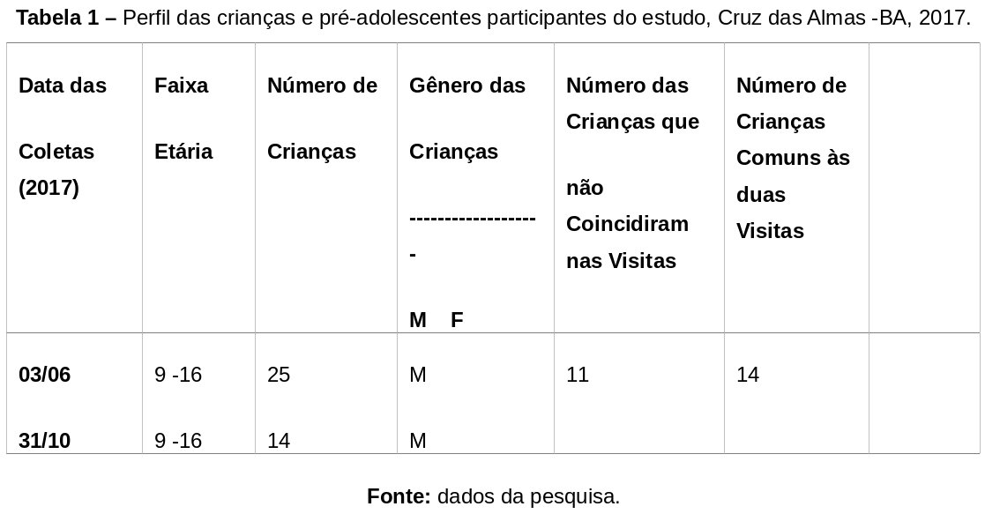

Tipo de estudo
Trata-se de um estudo descritivo pelo fato de envolver a observação, descrição e a análise dos fenômenos envolvidos sem a intervenção do pesquisador. Assim, foi feita uma análise de campo que teve como base a abordagem quali-quantitativa, já que busca na pesquisa muito mais que respostas dadas. A investigação desejou conhecer a realidade, a partir da vivência do grupo, com o objetivo de gerar um produto e expandi-lo para o coletivo.
A abordagem quali-quantitativa associa a análise estatística à investigação dos significados das relações humanas, privilegiando a melhor compreensão do tema a ser estudado e facilitando a interpretação dos dados. Segundo Polit e Hungler (2004), a abordagem quanti-qualitativa é aquela que permite a complementação entre palavras e números, as duas linguagens fundamentais da comunicação humana.
Cenário do estudo
A pesquisa foi realizada no Centro de Referência Esportiva do Recôncavo da Bahia (CRER-BA) que, segundo Alves e Silva (2016), é um projeto social vinculado ao Programa Petrobrás de Esporte e Cidadania. O projeto é uma parceria da Universidade Federal do Recôncavo da Bahia (UFRB) com a Associação Cultural Grupo Unido para Educação e Trabalhos de Orientação (GUETO), obtendo o apoio da Prefeitura Municipal de Cruz das Almas-BA.
Seguindo a mesma premissa, Alves e Esteves (2014) reforçam que o CRER-BA é um projeto social esportivo desenvolvido pela UFRB com o intuito de aliar a formação e a pesquisa, visando à promoção e o desenvolvimento integral de crianças, jovens e adolescentes por meio das práticas esportivas educacionais. Esta atuação ocorre através do atendimento direto de crianças e jovens, participantes do ensino público.
O projeto tem como função promover a interação com as diferenças e o respeito às individualidades, além de causar um estreitamento das relações entre as políticas públicas esportivas e a educação, promovendo ganhos motores, cognitivos, afetivos e sociais para a comunidade contemplada com o esporte educacional (ALVES; SILVA, 2016).
Os autores supracitados reforçam que o CRER-BA se baseia no Estatuto da Criança e do Adolescente quando afirmam que toda criança e adolescente tem direito ao acesso ao esporte e as atividades de lazer. Assim, existe a preocupação de ofertar o esporte de forma apropriada e de disponibilizar o acesso a conteúdos que vão além dele.
O esporte como instrumento de inclusão social é ofertado no projeto em sete modalidades que funcionam duas vezes por semana, durante o turno matutino e vespertino. Estas utilizam a metodologia do Esporte Educacional aplicada à modalidade oferecida (Esporte Educacional como ferramenta pedagógica para o ensino do futebol). Para garantir o processo de ensino-aprendizagem do esporte e seus temas transversais, são adotados os cinco princípios do esporte educacional, que servem para nortear todas as aulas (ALVES; SILVA, 2016).
Ao longo de sua história, o CRER-BA vem impactando de forma positiva a comunidade agraciada pelo projeto. Observam-se avanços comportamentais e atitudinais significativos nos participantes que, por sua vez, acabam sendo agentes multiplicadores das boas práticas estabelecidas pela metodologia aplicada. Os procedimentos adotados permitem aprender a executar bem o esporte e ir além, ou seja, inserir o ensino socioambiental no cotidiano das aulas de esportes, trazendo um componente fundamental para o entendimento da comunidade das boas práticas ambientais e conflitos sociais.
Segundo Alves e Steves (2014), o CRER-BA oferece atividades socioeducativas para jovens com faixa etária entre 04 e 18 anos, que são estudantes da rede pública de ensino e, em sua maioria, estão classificados em estado de vulnerabilidade social, devendo ser contemplados única e exclusivamente pela metodologia do Esporte Educacional. Os alunos participam de aulas de esportes duas vezes por semana e de vários eventos organizados durante o ano, que contribuem com o aprendizado socioambiental do participante.
Participantes do estudo
A pesquisa foi realizada com 14 crianças e adolescentes do gênero masculino na faixa etária de 9 a 16 anos. A categorização das idades seguiu o preconizado pelo Estatuto da Criança e do Adolescente (ECA) no Art. 2°: “considera-se criança, para os efeitos desta lei, a pessoa até 12 anos de idade incompletos, e adolescentes aqueles entre 12 e 18 anos de idade”.
Os sujeitos estudados são moradores de um bairro periférico da cidade de Cruz das Almas-BA, que conta com pouco apoio das políticas públicas para melhorar as condições de moradia e saúde, além de possuir um alto índice de criminalidade como uso de drogas, agressões físicas e verbais, homicídios e confrontos com a polícia.
Assim, foram adotados os seguintes critérios de inclusão e exclusão:
De inclusão:
- Estudantes matriculados nas aulas de Futebol Educacional.
- Jovens que estejam na faixa de 9 a 16 anos.
- Consentimento dos responsáveis para participar da pesquisa.
De exclusão:
- Fora da faixa etária de 9 a 16 anos.
- Estudantes cujos pais não concordaram com a pesquisa.
- Estudantes que faltaram o equivalente a oito aulas.
- Estudantes que não participaram das duas entrevistas (análise do grupo focal).
Procedimentos e instrumentos de coleta de dados
Aulas de futebol educacional
Em um período de cinco meses, duas vezes por semana, em aulas de duas horas, foram realizadas atividades, cuja função foi transmitir conhecimentos relacionados ao futebol aliado às práticas de Educação Ambiental.
O planejamento das aulas levou em consideração a realidade local e estrutural do ambiente. Para tal finalidade, o planejamento começou com a elaboração da sequência didática (APÊNDICE A), que foi baseada no material de Alves e Esteves (2014) que apresenta um plano de unidade que serve para nortear as atividades por um determinado tempo (bimestre, trimestre, semestre). Esse plano contém nome do professor, local de atuação, período da realização das atividades, tema, objetivo geral, expectativas de aprendizagem (conceitual, procedimental e atitudinal), atividades e estratégias, indicadores, instrumentos de avaliação e resultados.
O outro instrumento de planejamento (APÊNDICE B) foi o plano de aula que serviu para nortear as atividades do professor durante o dia a dia. Ele contém dados como: público, faixa etária, modalidade, tema de conhecimento e os objetivos da unidade didática. Esta é dividida em seis momentos que são utilizados para garantir o aprendizado esportivo, social e ambiental.
O primeiro momento foi chamado de tempo livre, com a duração de aproximadamente 10 min, e tem o objetivo de observar a atitude e o comportamento dos estudantes em uma atividade livre definida por eles mesmos.
O segundo momento envolveu atividades relacionadas ao aspecto educacional dos estudantes. Assim, a roda de saberes constituiu-se como uma estratégia educativa para possibilitar o trato de assuntos pertinentes à educação socioambiental do participante.
O terceiro momento foi uma atividade lúdica com jogos ambientais que procuraram proporcionar aprendizados ambientais de maneira descontraída.
No momento seguinte, aconteceu a aula sobre os fundamentos específicos do esporte, elementos que garantem o aprendizado esportivo do aluno. Em seguida, o quinto momento trouxe o jogo de futebol com regras definidas. Ao final, houve um momento reservado para que os alunos fizessem breves comentários sobre os seus principais aprendizados da aula.
Entrevista semi-estruturada
Com o intuito de compreender a percepção socioambiental dos estudantes inseridos nas aulas de Futebol Educacional, foram realizadas entrevistas semi-estruturadas com os alunos nas dependências do CRER-BA em dois períodos: no primeiro mês (antes do início das aulas de Futebol Educacional) e no quinto mês (após a última aula de Futebol Educacional). Para possibilitar a análise dos dados, os alunos foram identificados com a letra A seguida de números e as entrevistas foram caracterizadas como primeira e segunda entrevista. A estratégia citada se enquadra dentre as várias modalidades disponíveis para obter informações de caráter qualitativo (BORGES E SANTOS, 2005).
Deve-se ressaltar que as entrevistas foram gravadas em áudio, guiadas por um roteiro de questões (APÊNDICE C) que abordou 04 eixos: caracterização do meio ambiente, recursos ambientais, Educação Ambiental e Futebol Educacional. As transcrições foram realizadas após o término das entrevistas para que a análise fosse iniciada o mais rápido possível, o que facilitou a compreensão do pesquisador. As gravações ficarão sob a guarda do pesquisador até cinco anos após a pesquisa e, ao fim desse período, o material será apagado.
Deve-se salientar que previamente os responsáveis pelas crianças foram informados sobre o conteúdo da pesquisa e assinaram um termo de consentimento (APÊNDICE D). As crianças envolvidas, por sua vez, assinaram um termo de assentimento (APÊNDICE E).
Percepção socioambiental retratada em desenhos
Após a primeira e a segunda entrevista, foi solicitado aos estudantes que realizassem desenhos sobre o que significa o meio ambiente em suas vidas em até 1 hora. A atividade foi realizada em um local calmo com mínima ocorrência de barulho externo e movimentação de terceiros. Os participantes foram separados de modo que não conseguissem ver o desenho do colega. O indivíduo expressou-se, portanto, sem a influência dos companheiros.
Aspectos éticos
A presente pesquisa possui aprovação pelo Comitê de Ética e Pesquisa da Faculdade Maria Milza (CEP-FAMAM), parecer 2037467 (ANEXO A). De acordo com todos os princípios éticos contidos na Resolução Nº 466/12 do Conselho Nacional de Saúde (CNS), o presente estudo assegura a confiabilidade, privacidade, anonimato e sigilo da identidade dos sujeitos da pesquisa e, ao mesmo tempo, garante a imparcialidade, impessoalidade e objetividade na condução do estudo e na redação dos relatórios técnicos.
Assim, primeiramente, foi requerido um termo de autorização da pesquisa e um termo de anuência à coordenadora do Centro de Referência em Esporte Educacional. Posteriormente, foi assinado um termo de compromisso dos pesquisadores e um termo de consentimento livre e esclarecido.
Após esta etapa, o projeto de pesquisa foi cadastrado no endereço eletrônico da Plataforma Brasil que encaminhou o mesmo ao Comitê de Ética e Pesquisa (CEP) da FAMAM para ser analisado. Somente após parecer favorável do CEP foi iniciada a coleta de dados. Em seguida, foram apresentados o objetivo da pesquisa, a metodologia e o termo de livre consentimento para os responsáveis dos pesquisados. O TCLE foi assinado em duas vias, ficando uma de posse do pesquisador e outra do voluntário. É relevante ressaltar que esse termo assegura a todos os participantes do estudo, total sigilo e anonimato.
Análise dos dados
A realização das entrevistas teve como objetivo identificar a concepção dos alunos sobre meio ambiente, Educação Ambiental e Futebol Educacional, além do compartilhamento de conhecimento entre os entrevistados. Para manter o sigilo dos participantes da pesquisa foram utilizados como identificação uma letra e um numeral. Quanto a análise das entrevistas, foi utilizada a técnica de análise de Minayo (2010), que contempla as seguintes fases: pré-análise, exploração do material e tratamento dos resultados, inferência e interpretação.
Na primeira fase (pré-análise), as falas foram lidas, separadas e compiladas por questões norteadoras, para a apreensão do sentido do todo.
Em seguida, realizou-se a exploração das falas e, posteriormente, foram extraídas palavras e expressões que respondiam à questão norteadora, e foram iniciadas as inferências e as interpretações.
Análise estatística dos desenhos
Para a análise dos desenhos, foi aplicada a metodologia proposta por Pedrini e De-Paula (2008) e Pedrini, Costa e Ghilardi (2010) que utilizaram a identificação de presença/ausência de elementos socioambientais em desenhos para entender como o sujeito estudado percebe seu meio e suas inter-relações de dependência. Cada um dos macrocompartimentos foi detalhado no nível mais específico possível para identificar com mais especificidade os seus inter-relacionamentos.
Quanto maior o número dessas conexões entre os macrocompartimentos, mais ficaria evidenciada a noção pressuposta de totalidade do conceito de meio ambiente, pois, no entendimento dessa proposta, o conceito do termo, no contexto da Educação Ambiental para sociedades sustentáveis, é o da totalidade integralmente inter-relacionada e dependente disso para seu equilíbrio. Os elementos do meio foram divididos em cinco eixos. São eles: concreto, abstrato, natural, artificial e homem. A análise dos dados/informações foi quali-quantitativa. Qualitativamente, cada símbolo desenhado que possa representar um item socioambiental foi identificado como parte de um macrocompartimento, listado e analisado em termos de variabilidade (variação qualitativa entre os símbolos) nos dois períodos estudados. Quantitativamente, foi avaliado o número de símbolos e variabilidade (variação quantitativa entre os macroelementos dentro de alguns macrocompartimentos).
Para verificar se existia diferença entre o número de macroelementos dentro de cada macrocompartimento, antes e depois da aplicação da metodologia de Futebol Educacional proposta, foi calculada a média e o intervalo de confiança dentro de cada macrocompartimento através do programa BioEstat® 5.0 (Instituto Mamirauá, Tefé, AM, Brasil).